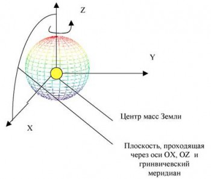
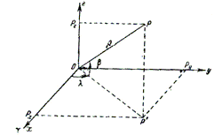
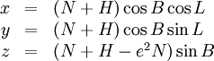
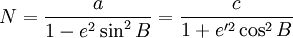

Геоцентрические координаты
Геоцентрическая система координат не является плоской проекцией, основанной на проекции карты. Это географическая система координат, в которой Земля моделируется как сфера или сфероид правосторонней X,Y,Z (трехмерной Декартовой) системы измерений от центра Земли. Ось Х указывает на Главный меридиан, ось Y указывает направление 90 градусов от главного меридиана в плоскости экватора (по часовой стрелке при виде с точки Южного полюса), и ось Z указывает направление на Северный полюс.
Геоцентрическая система координат похожа на географическую систему координат, основанную на долготе и широте, в которой измеряются углы от центра Земли. Области использования Геоцентрическая система координат используется как внутренняя промежуточная система для некоторых видов географических преобразований (датум). Она используется как основа для вычислений, так и в качестве элемента методов географических преобразований датумов.
Формулы перехода от географических к геоцентрическим координатам:
где
